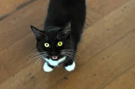

"With great power comes with great responsibility" as said by uncle Ben in Spiderman, cats are perfect just the way they are and give back many times yet there's something that is always lingering, and never stops... their hungry meows. Cats meowing to some may be them trying to talk to you, I believe it is a mechanism, a mechanism so annoying, I mean so strong that it makes you need to feed them at that very moment. Remember always feed your kitties.
 Bakery Cats Nature Cats